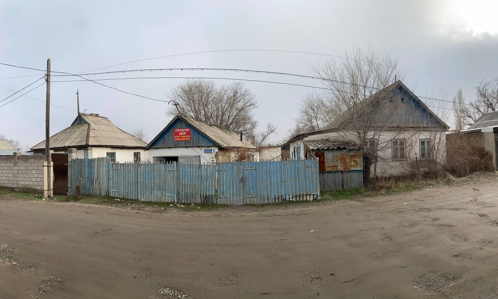
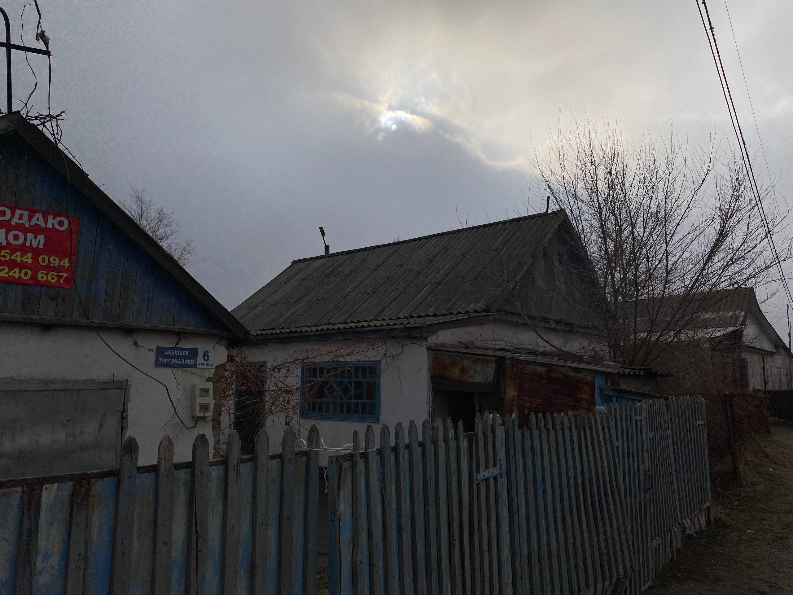
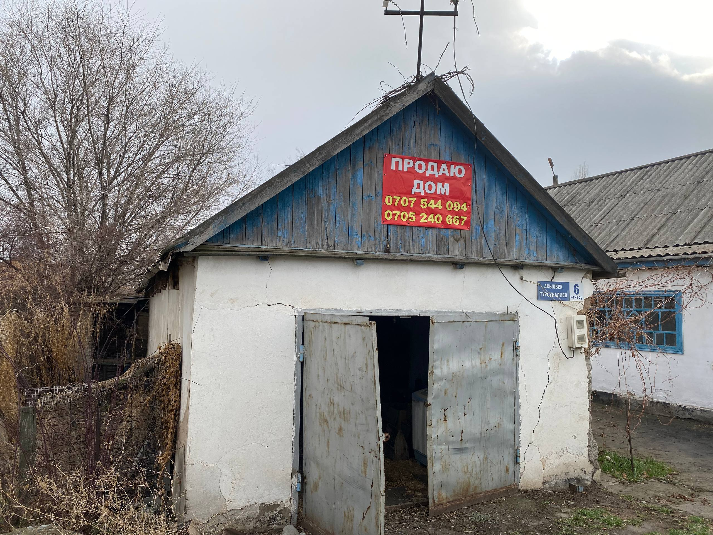
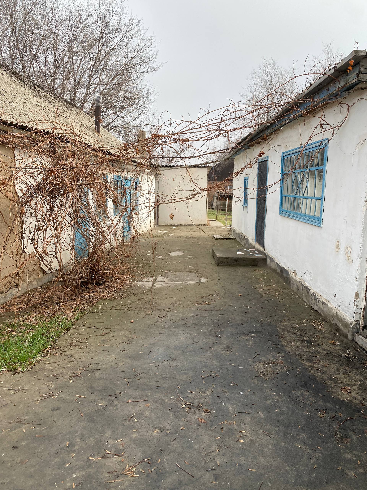
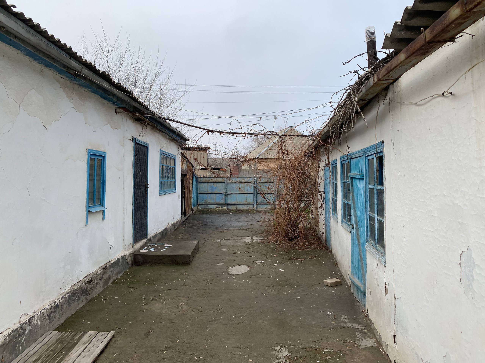
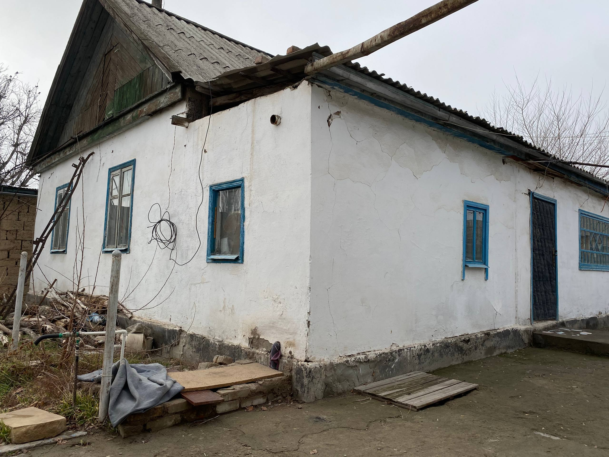
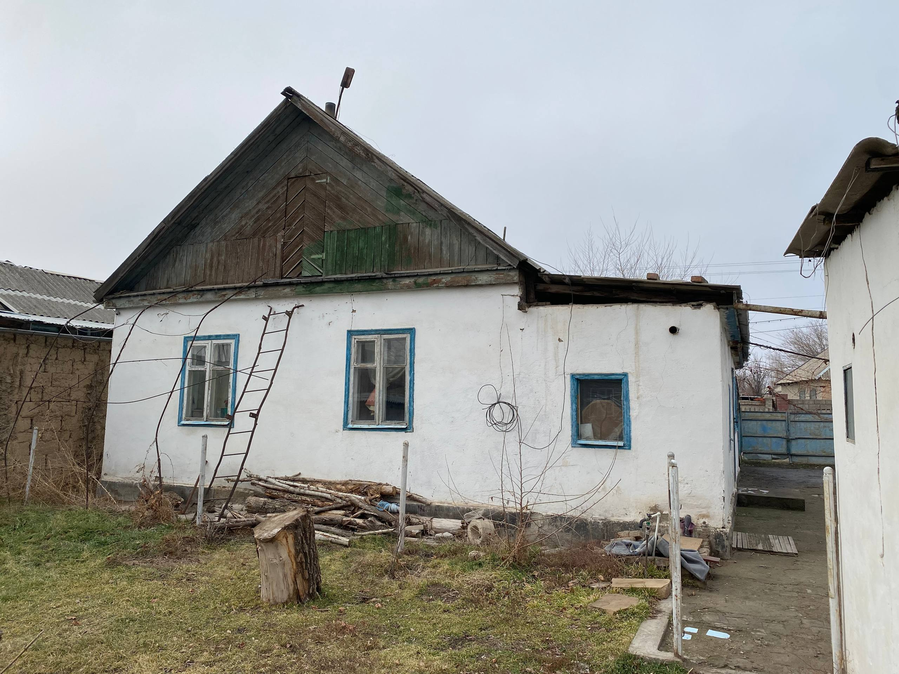
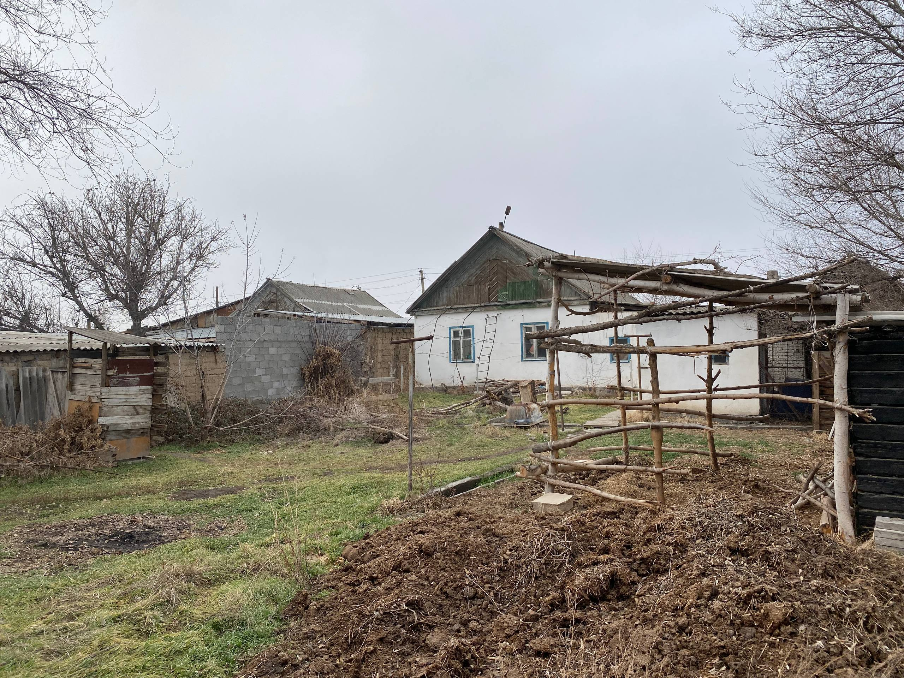
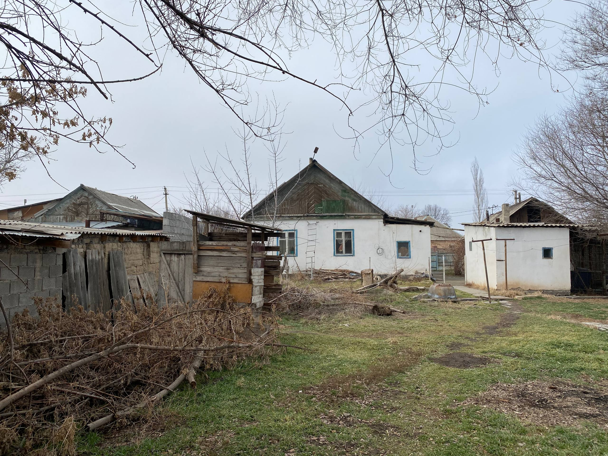
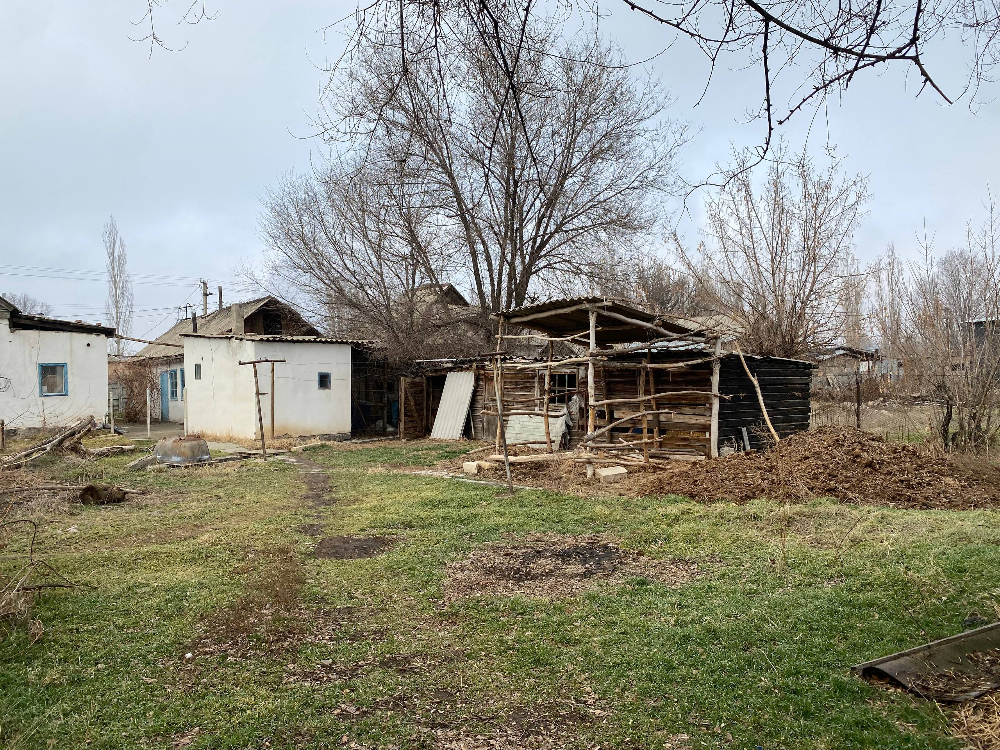

8 соток, дом 75 м² в Ивановке
Большой участок с домом в Чуйской области — тишина, природа и комфорт.
Описание дома
Дом площадью 75 м² построен в классическом советском стиле. При входе находится просторная терраса, где можно обустроить кухню. Планировка включает большой зал, спальню, гостиную с проходом в ванную комнату, а также кладовку на террасе. Рядом проходит железная дорога, поэтому сюда удобно приехать на поезде — станция Ивановка находится неподалёку. Идеально подходит как для постоянного проживания, так и для загородного отдыха.
Терраса
Возможность обустроить кухню
Большой зал
Просторное центральное пространство
Спальня
Уютная комната для отдыха
Гостиная
С проходом в ванную комнату
Ванная комната
Доступ из гостиной
Кладовка
На террасе для хранения
Галерея












Контакты
Заинтересовались участком? Напишите или позвоните, и я отвечу на все вопросы.